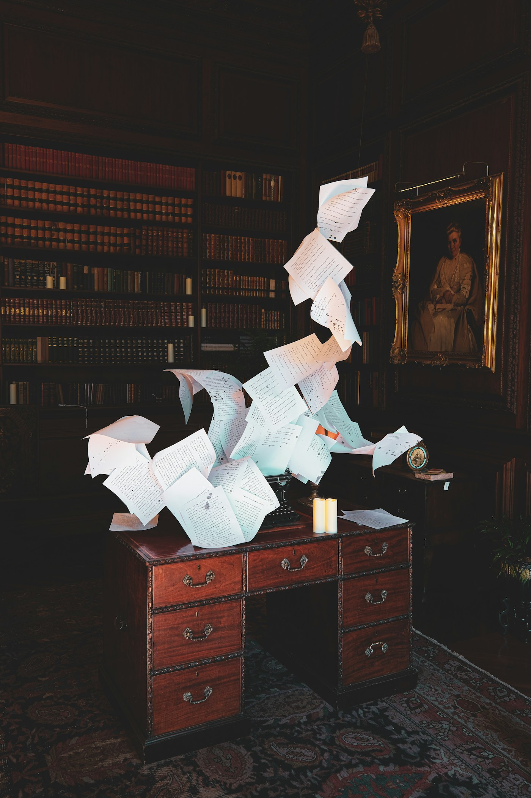

2026
Peça:
ZX-22_RITO
Segunda sem incêndio
22
Série 01 — Rito semanal
SEGUNDA SEM
INCÊNDI
O
Temas:
Urgência / Alçada / Rito
Zionaxs — Conceito
@zionaxs_ · digest fb446356 · foto: R. Garcin

2026
Peça:
ZX-22_RITO
Capa · S1
22
Sua segunda-feira começa
APAGAND
O
INCÊNDIO?
Existe um rito de 30 minutos para isso.
Temas:
Urgência / Alçada / Rito
Zionaxs — Conceito
@zionaxs_ · digest fb446356 · foto: D. Yao